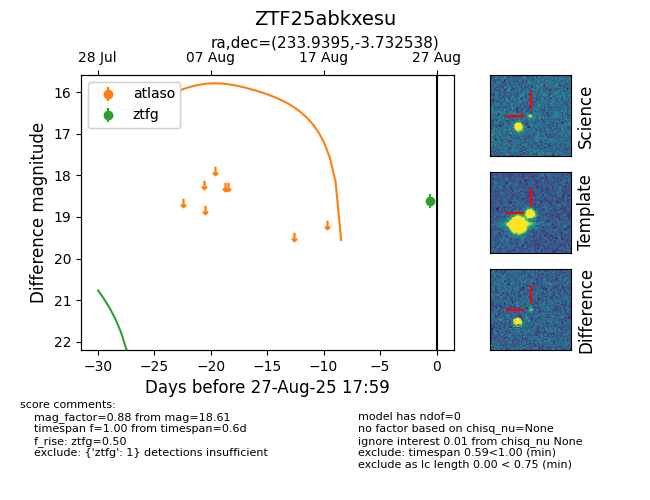

FINK: ZTF25abkxesu
Lasair: ZTF25abkxesu
ALeRCE: ZTF25abkxesu
ZTF25abkxesu (ztf,fink)
equatorial (ra, dec) = (233.9395,-3.73254)
galactic (l, b) = (1.4891,+39.77386)

last atlaso=18.37, ztfg=18.61
5 atlaso, 1 ztfg detections